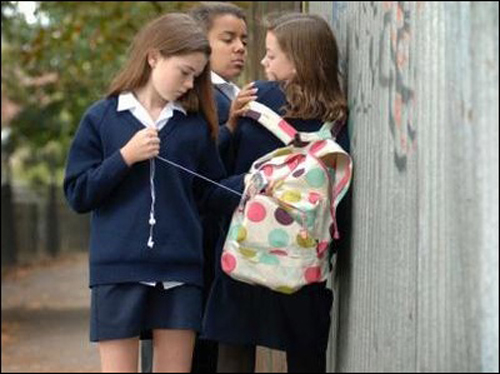
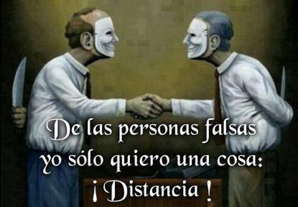
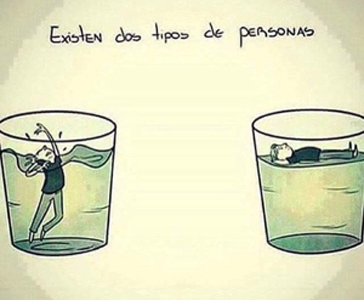
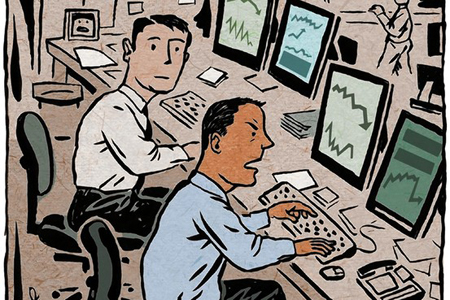
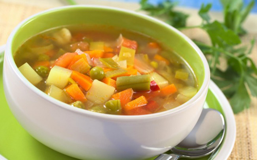
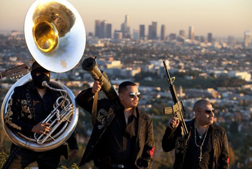

|
 |
 |
 |
|
|
|
|
No me gusta
Las injusticias
No soporto ver las injusticias a mi alrededor y peor si no puedo hacer nada, siento tanta impotencia.
Irresponsabilidad
Odio a las personas que son irresponsables y odio mucho que me hagan esperar
Hipocresía
No me gusta conocer a personas hipócritas, y si soy amigo de una trato de tener límites de mi confianza con esas personas.
Dramas
Me cae mal las personas que se ahogan en un vaso de agua por sus problemas insignificantes, a esas personas que se hacen las víctimas y que creen que el mundo les debe algo, habiendo personas que si pasan en verdad por un mal momento como la pérdida de un ser querido, o una grave enfermedad, y estas personas creando escenas de depresión para llamar la atención, las odio. También incluye a esas personas que se son muy quejumbrosas de todo a su alrededor y eso no les permite valorar lo que tienen y estar agradecidos.
Mente cerrada
Odio las personas de mente cerrada, que viven en los siglos pasados, que son tan racistas, tan discriminantes, homofóbicas, gente posesiva, gente que no se adapta a la era en la que estamos ahora, en la que todos somos iguales, y tenemos los mismos derechos, esas personas que les gusta dar la contraria que son tan infelices que no quieren ver a otras personas felices.
Corrupción y abuso de poder
No me gusta el sistema de seguridad que hay en mi país, donde sea hay corrupción y abusos por parte de las autoridades.
Imagen de policias abusando de su autoridad contra el pueblo
Caldos
No me gusta comer caldos de verduras. Se que son muy nutritivos, pero no me gustan para nada, me da mucho asco, pero la verdura en comida china si me gusta mucho.
Imagen de un caldo de verduras
Música pobre
No me gusta escuchar la música de corridos y la banda, y toda esa música que le habla de lo bueno que es ser infiel a tu pareja, que hablan de las mujeres como objetos, que un hombre vale más por los bienes materiales que tiene como los carros de lujo, el alcohol que bebe, las mansiones, y toda esa música que les da más fama a los narcotraficantes, alentando a aquellos que las escuchan que así deben de ser.
Cabello largo
No me gusta tener el cabello largo, me crece un poco y para mí ya lo tengo bastante largo y me lo quiero cortar mientras los demás me dicen que si lo tengo corto, pero yo me siento incómodo.